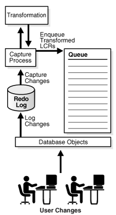
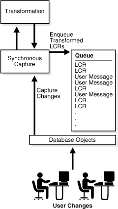
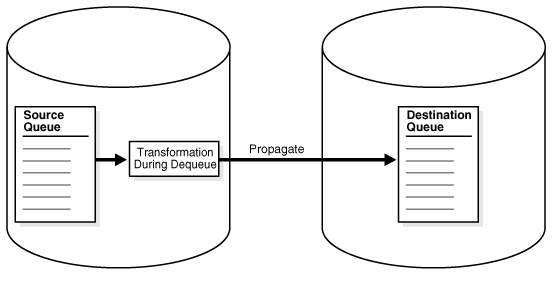
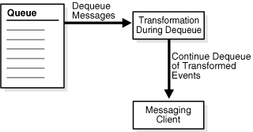

6 Rule-Based Transformations
A rule-based transformation is any modification to a message when a rule in a positive rule set evaluates to TRUE. There are two types of rule-based transformations: declarative and custom.
The following topics contain information about rule-based transformations:
6.1 Declarative Rule-Based Transformations
Declarative rule-based transformations cover a set of common transformation scenarios for row LCRs.
You specify (or declare) such a transformation using one of the following procedures in the DBMS_STREAMS_ADM package:
-
ADD_COLUMNeither adds or removes a declarative transformation that adds a column to a row LCR. -
DELETE_COLUMNeither adds or removes a declarative transformation that deletes a column from a row LCR. -
KEEP_COLUMNSeither adds or removes a declarative transformation that keeps a list of columns in a row LCR. The transformation removes columns that are not in the list from the row LCR. -
RENAME_COLUMNeither adds or removes a declarative transformation that renames a column in a row LCR. -
RENAME_SCHEMAeither adds or removes a declarative transformation that renames the schema in a row LCR. -
RENAME_TABLEeither adds or removes a declarative transformation that renames the table in a row LCR.
When you specify a declarative rule-based transformation, you specify the rule that is associated with it. When the specified rule evaluates to TRUE for a row LCR, Oracle Streams performs the declarative transformation internally on the row LCR, without invoking PL/SQL.
Declarative rule-based transformations provide the following advantages:
-
Performance is improved because the transformations are run internally without using PL/SQL.
-
Complexity is reduced because custom PL/SQL functions are not required.
Note:
Declarative rule-based transformations can transform row LCRs only. These row LCRs can be captured LCRs or persistent LCRs. Therefore, a DML rule must be specified when you run one of the procedures to add a declarative transformation. If a DDL rule is specified, then an error is raised.
See Also:
-
"Unsupported Data Types for Declarative Rule-Based Transformations"
-
"Row LCRs"
-
Oracle Database SQL Language Reference for information about data types
6.2 Custom Rule-Based Transformations
Custom rule-based transformations require a user-defined PL/SQL function to perform the transformation. The function takes as input an ANYDATA object containing a message and returns either an ANYDATA object containing the transformed message or an array that contains zero or more ANYDATA encapsulations of a message. A custom rule-based transformation function that returns one message is a one-to-one transformation function. A custom rule-based transformation function that can return more than one message in an array is a one-to-many transformation function. One-to-one transformation functions are supported for any type of Oracle Streams client, but one-to-many transformation functions are supported only for Oracle Streams capture processes and synchronous captures.
To specify a custom rule-based transformation, use the DBMS_STREAMS_ADM.SET_RULE_TRANSFORM_FUNCTION procedure. You can use a custom rule-based transformation to modify captured LCRs, persistent LCRs, and persistent user messages.
For example, a custom rule-based transformation can be used when the data type of a particular column in a table is different at two different databases. The column might be a NUMBER column in the source database and a VARCHAR2 column in the destination database. In this case, the transformation takes as input an ANYDATA object containing a row LCR with a NUMBER data type for a column and returns an ANYDATA object containing a row LCR with a VARCHAR2 data type for the same column.
Other examples of custom transformations on messages include:
-
Splitting a column into several columns
-
Combining several columns into one column
-
Modifying the contents of a column
-
Modifying the payload of a user message
Custom rule-based transformations provide the following advantages:
-
Flexibility is increased because you can use PL/SQL to perform custom transformations.
-
A wider range of messages can be transformed, including DDL LCRs and user messages, as well as row LCRs.
The following considerations apply to custom rule-based transformations:
-
When you perform custom rule-based transformations on DDL LCRs, you probably need to modify the DDL text in the DDL LCR to match any other modifications. For example, if the rule-based transformation changes the name of a table in the DDL LCR, then the rule-based transformation should change the table name in the DDL text in the same way.
-
If possible, avoid specifying a custom rule-based transformation for a global rule or schema rule if the transformation pertains to a relatively small number of LCRs that will evaluate to
TRUEfor the rule. For example, a custom rule-based transformation that operates on a single table can be specified for a schema rule, and this schema can contain hundreds of tables. Specifying such a rule-based transformation has performance implications because extra processing is required for the LCRs that will not be transformed.To avoid specifying such a custom rule-based transformation, either you can use a procedure DML handler to perform the transformation, or you can specify the transformation for a table rule instead of a global or schema rule. However, replacing a global or schema rule with table rules results in an increase in the total number of rules and additional maintenance when a new table is added.
-
When a custom rule-based transformation that uses a one-to-one transformation function receives a captured LCR or persistent LCR, the transformation can construct a new LCR and return it. Similarly, when a custom rule-based transformation that uses a one-to-many transformation function receives a captured LCR or a persistent LCR, the transformation can construct multiple new LCRs and return them in an array.
For any LCR constructed and returned by a custom rule-based transformation, the
source_database_name,transaction_id, andscnparameter values must match the values in the original LCR. Oracle automatically specifies the values in the original LCR for these parameters, even if an attempt is made to construct LCRs with different values. -
A custom rule-based transformation that receives a user message can construct a new message and return it. In this case, the returned message can be an LCR constructed by the custom rule-based transformation.
-
A custom rule-based transformation cannot convert an LCR into a non-LCR message. This restriction applies to captured LCRs and persistent LCRs.
-
A custom rule-based transformation cannot convert a row LCR into a DDL LCR or a DDL LCR into a row LCR. This restriction applies to captured LCRs and persistent LCRs.
See Also:
-
"Unsupported Data Types for Custom Rule-Based Transformations"
-
"Types of Messages That Can Be Processed with an Apply Process"
-
Oracle Database PL/SQL Packages and Types Reference for information about the
SET_RULE_TRANSFORM_FUNCTIONprocedure
6.2.1 Custom Rule-Based Transformations and Action Contexts
You use the SET_RULE_TRANSFORM_FUNCTION procedure in the DBMS_STREAMS_ADM package to specify a custom rule-based transformation for a rule. This procedure modifies the action context of a rule to specify the transformation. A rule action context is optional information associated with a rule that is interpreted by the client of the rules engine after the rule evaluates to TRUE for a message. The client of the rules engine can be a user-created application or an internal feature of Oracle, such as Oracle Streams. The information in an action context is an object of type SYS.RE$NV_LIST, which consists of a list of name-value pairs.
A custom rule-based transformation in Oracle Streams always consists of the following name-value pair in an action context:
-
If the function is a one-to-one transformation function, then the name is
STREAMS$_TRANSFORM_FUNCTION. If the function is a one-to-many transformation function, then the name isSTREAMS$_ARRAY_TRANS_FUNCTION. -
The value is an
ANYDATAinstance containing a PL/SQL function name specified as aVARCHAR2. This function performs the transformation.
You can display the existing custom rule-based transformations in a database by querying the DBA_STREAMS_TRANSFORM_FUNCTION data dictionary view.
When a rule in a positive rule set evaluates to TRUE for a message in an Oracle Streams environment, and an action context that contains a name-value pair with the name STREAMS$_TRANSFORM_FUNCTION or STREAMS$_ARRAY_TRANS_FUNCTION is returned, the PL/SQL function is run, taking the message as an input parameter. Other names in an action context beginning with STREAMS$_ are used internally by Oracle and must not be directly added, modified, or removed. Oracle Streams ignores any name-value pair that does not begin with STREAMS$_ or APPLY$_.
When a rule evaluates to FALSE for a message in an Oracle Streams environment, the rule is not returned to the client, and any PL/SQL function appearing in a name-value pair in the action context is not run. Different rules can use the same or different transformations. For example, different transformations can be associated with different operation types, tables, or schemas for which messages are being captured, propagated, applied, or dequeued.
6.2.2 Required Privileges for Custom Rule-Based Transformations
The user who calls the transformation function must have EXECUTE privilege on the function. The following list describes which user calls the transformation function:
-
If a transformation is specified for a rule used by a capture process, then the capture user for the capture process calls the transformation function.
-
If a transformation is specified for a rule used by a synchronous capture, then the capture user for the synchronous capture calls the transformation function.
-
If a transformation is specified for a rule used by a propagation, then the owner of the source queue for the propagation calls the transformation function.
-
If a transformation is specified on a rule used by an apply process, then the apply user for the apply process calls the transformation function.
-
If a transformation is specified on a rule used by a messaging client, then the user who invokes the messaging client calls the transformation function.
6.3 Rule-Based Transformations and Oracle Streams Clients
The following sections provide more information about rule-based transformations and Oracle Streams clients:
The information in this section applies to both declarative and custom rule-based transformations.
6.3.1 Rule-Based Transformations and Capture Processes
For a transformation to be performed during capture by a capture process, a rule that is associated with a rule-based transformation in the positive rule set for the capture process must evaluate to TRUE for a particular change found in the redo log.
If the transformation is a declarative rule-based transformation, then Oracle transforms the captured LCR internally when the rule in a positive rule set evaluates to TRUE for the message. If the transformation is a custom rule-based transformation, then an action context containing a name-value pair with the name STREAMS$_TRANSFORM_FUNCTION or STREAMS$_ARRAY_TRANS_FUNCTION is returned to the capture process when the rule in a positive rule set evaluates to TRUE for the captured LCR.
The capture process completes the following steps to perform a rule-based transformation:
-
Formats the change in the redo log into an LCR.
-
Converts the LCR into an
ANYDATAobject. -
Transforms the LCR. If the transformation is a declarative rule-based transformation, then Oracle transforms the
ANYDATAobject internally based on the specifications of the declarative transformation. If the transformation is a custom rule-based transformation, then the capture user for the capture process runs the PL/SQL function in the name-value pair to transform theANYDATAobject. -
Enqueues one or more transformed
ANYDATAobjects into the queue associated with the capture process, or discards the LCR if an array that contains zero elements is returned by the transformation function.
All actions are performed by the capture user for the capture process. Figure 6-1 shows a transformation during capture by a capture process.
Figure 6-1 Transformation During Capture by a Capture Process
Description of "Figure 6-1 Transformation During Capture by a Capture Process"
For example, if an LCR is transformed during capture by a capture process, then the transformed LCR is enqueued into the queue used by the capture process. Therefore, if such a captured LCR is propagated from the dbs1.example.com database to the dbs2.example.com and the dbs3.example.com databases, then the queues at dbs2.example.com and dbs3.example.com will contain the transformed LCR after propagation.
The advantages of performing transformations during capture by a capture process are the following:
-
Security can be improved if the transformation removes or changes private information, because this private information does not appear in the source queue and is not propagated to any destination queue.
-
Space consumption can be reduced, depending on the type of transformation performed. For example, a transformation that reduces the amount of data results in less data to enqueue, propagate, and apply.
-
Transformation overhead is reduced when there are multiple destinations for a transformed LCR, because the transformation is performed only once at the source, not at multiple destinations.
-
A capture process transformation can transform a single message into multiple messages.
The possible disadvantages of performing transformations during capture by a capture process are the following:
-
The transformation overhead occurs in the source database if the capture process is a local capture process. However, if the capture process is a downstream capture process, then this overhead occurs at the downstream database, not at the source database.
-
All sites receive the transformed LCR.
Note:
A rule-based transformation cannot be used with a capture process to modify or remove a column of a data type that is not supported by Oracle Streams.
6.3.1.1 Rule-Based Transformation Errors During Capture by a Capture Process
If an error occurs when the transformation is run during capture by a capture process, then the error is returned to the capture process. The behavior of the capture process depends on the type of transformation being performed and the type of error encountered. The following capture process behaviors are possible:
-
If the transformation is a declarative rule-based transformation, and the capture process can ignore the error, then the capture process performs the transformation and captures the change. For example, if a capture process tries to perform a
DELETE_COLUMNdeclarative rule-based transformation, and the column specified for deletion does not exist in the row LCR, then the capture process captures the change and continues to run. -
If the transformation is a declarative rule-based transformation, and the capture process cannot ignore the error, then the change is not captured, and the capture process becomes disabled. For example, if a capture process tries to perform an
ADD_COLUMNdeclarative rule-based transformation, and the column specified for addition already exists in the row LCR, then the change is not captured, and the capture process becomes disabled. -
Whenever an error is encountered in a custom rule-based transformation, the change is not captured, and the capture process becomes disabled.
If the capture process becomes disabled, then you must either change or remove the rule-based transformation to avoid the error before the capture process can be enabled.
6.3.2 Rule-Based Transformations and Synchronous Captures
For a transformation to be performed during capture by a synchronous capture, a rule that is associated with a rule-based transformation in the positive rule set for the synchronous capture must evaluate to TRUE for a particular DML change made to a table.
If the transformation is a declarative rule-based transformation, then Oracle transforms the persistent LCR internally when the rule in a positive rule set evaluates to TRUE for the message. If the transformation is a custom rule-based transformation, then an action context containing a name-value pair with the name STREAMS$_TRANSFORM_FUNCTION is returned to the capture process when the rule in a positive rule set evaluates to TRUE for the persistent LCR.
The synchronous capture completes the following steps to perform a rule-based transformation:
-
Formats the change in the redo log into a row LCR.
-
Converts the row LCR into an
ANYDATAobject. -
Transforms the LCR. If the transformation is a declarative rule-based transformation, then Oracle transforms the
ANYDATAobject internally based on the specifications of the declarative transformation. If the transformation is a custom rule-based transformation, then the capture user for the synchronous capture runs the PL/SQL function in the name-value pair to transform theANYDATAobject. -
Enqueues the transformed
ANYDATAobject into the queue associated with the synchronous capture.
All actions are performed by the capture user for the synchronous capture. Figure 6-2 shows a transformation during capture.
Figure 6-2 Transformation During Capture by a Synchronous Capture
Description of "Figure 6-2 Transformation During Capture by a Synchronous Capture"
For example, if a row LCR is transformed during capture by a synchronous capture, then the transformed row LCR is enqueued into the queue used by the synchronous capture. Therefore, if such a captured LCR is propagated from the dbs1.example.com database to the dbs2.example.com and the dbs3.example.com databases, then the queues at dbs2.example.com and dbs3.example.com will contain the transformed row LCR after propagation.
The advantages of performing transformations during capture by a synchronous capture are the following:
-
Security can be improved if the transformation removes or changes private information, because this private information does not appear in the source queue and is not propagated to any destination queue.
-
Space consumption can be reduced, depending on the type of transformation performed. For example, a transformation that reduces the amount of data results in less data to enqueue, propagate, and apply.
-
Transformation overhead is reduced when there are multiple destinations for a transformed row LCR, because the transformation is performed only once at the source, not at multiple destinations.
The possible disadvantages of performing transformations during capture by a synchronous capture are the following:
-
The transformation overhead occurs in the source database.
-
All sites receive the transformed LCR.
Note:
A rule-based transformation cannot be used with a synchronous capture to modify or remove a column of a data type that is not supported by Oracle Streams.
See Also:
6.3.2.1 Rule-Based Transformations and Errors During Capture by a Synchronous Capture
If an error occurs when the transformation is run during capture by a synchronous capture, then the error is returned to the synchronous capture. The behavior of the synchronous capture depends on the type of transformation being performed and the type of error encountered. The following synchronous capture behaviors are possible:
-
If the transformation is a declarative rule-based transformation, and the synchronous capture can ignore the error, then the synchronous capture performs the transformation and captures the change. For example, if a synchronous capture tries to perform a
DELETE_COLUMNdeclarative rule-based transformation, and the column specified for deletion does not exist in the row LCR, then the synchronous capture captures the change. -
If the transformation is a declarative rule-based transformation, and the synchronous capture cannot ignore the error, then the change is not captured, and the DML operation aborts. For example, if a synchronous capture tries to perform an
ADD_COLUMNdeclarative rule-based transformation, and the column specified for addition already exists in the row LCR, then the change is not captured, and the DML aborts. -
Whenever an error is encountered in a custom rule-based transformation, the change is not captured, and the DML aborts.
If the DML aborts because of a rule-based transformation, then you must either change or remove the rule-based transformation to perform the DML operation.
6.3.3 Rule-Based Transformations and Propagations
For a transformation to be performed during propagation, a rule that is associated with a rule-based transformation in the positive rule set for the propagation must evaluate to TRUE for a message in the source queue for the propagation. This message can be a captured LCR, buffered LCR, buffered user message, persistent LCR, and persistent user message.
If the transformation is a declarative rule-based transformation, then Oracle transforms the message internally when the rule in a positive rule set evaluates to TRUE for the message. If the transformation is a custom rule-based transformation, then an action context containing a name-value pair with the name STREAMS$_TRANSFORM_FUNCTION is returned to the propagation when the rule in a positive rule set evaluates to TRUE for the message.
The propagation completes the following steps to perform a rule-based transformation:
-
Starts dequeuing the message from the source queue.
-
Transforms the message. If the transformation is a declarative rule-based transformation, then Oracle transforms the message internally based on the specifications of the declarative transformation. If the transformation is a custom rule-based transformation, then the source queue owner runs the PL/SQL function in the name-value pair to transform the message.
-
Completes dequeuing the transformed message.
-
Propagates the transformed message to the destination queue.
Figure 6-3 shows a transformation during propagation.
Figure 6-3 Transformation During Propagation
Description of "Figure 6-3 Transformation During Propagation"
For example, suppose you use a rule-based transformation for a propagation that propagates messages from the dbs1.example.com database to the dbs2.example.com database, but you do not use a rule-based transformation for a propagation that propagates messages from the dbs1.example.com database to the dbs3.example.com database.
In this case, a message in the queue at dbs1.example.com can be transformed before it is propagated to dbs2.example.com, but the same message can remain in its original form when it is propagated to dbs3.example.com. In this case, after propagation, the queue at dbs2.example.com contains the transformed message, and the queue at dbs3.example.com contains the original message.
The advantages of performing transformations during propagation are the following:
-
Security can be improved if the transformation removes or changes private information before messages are propagated.
-
Some destination queues can receive a transformed message, while other destination queues can receive the original message.
-
Different destinations can receive different variations of the same transformed message.
The possible disadvantages of performing transformations during propagation are the following:
-
Once a message is transformed, any database to which it is propagated after the first propagation receives the transformed message. For example, if
dbs2.example.compropagates the message todbs4.example.com, thendbs4.example.comreceives the transformed message. -
When the first propagation in a directed network performs the transformation, and a local capture process captured the message, the transformation overhead occurs on the source database. However, if the capture process is a downstream capture process, then this overhead occurs at the downstream database, not at the source database.
-
When the first propagation in a directed network performs the transformation, and a synchronous capture captured the message, the transformation overhead occurs on the source database.
-
The same transformation can be done multiple times on a message when different propagations send the message to multiple destination databases.
6.3.3.1 Rule-Based Transformation Errors During Propagation
If an error occurs during the transformation, then the message that caused the error is not dequeued or propagated, and the error is returned to the propagation. Before the message can be propagated, you must change or remove the rule-based transformation to avoid the error.
6.3.4 Rule-Based Transformations and an Apply Process
For a transformation to be performed during apply, a rule that is associated with a rule-based transformation in the positive rule set for the apply process must evaluate to TRUE for a message in the queue for the apply process. This message can be a captured LCR, a persistent LCR, or a persistent user message.
If the transformation is a declarative rule-based transformation, then Oracle transforms the message internally when the rule in a positive rule set evaluates to TRUE for the message. If the transformation is a custom rule-based transformation, then an action context containing a name-value pair with the name STREAMS$_TRANSFORM_FUNCTION is returned to the apply process when the rule in a positive rule set evaluates to TRUE for the message.
The apply process completes the following steps to perform a rule-based transformation:
-
Starts to dequeue the message from the queue.
-
Transforms the message. If the transformation is a declarative rule-based transformation, then Oracle transforms the message internally based on the specifications of the declarative transformation. If the transformation is a custom rule-based transformation, then the apply user runs the PL/SQL function in the name-value pair to transform the message.
-
Completes dequeuing the transformed message.
-
Applies the transformed message, which can entail changing database objects at the destination database or sending the transformed message to an apply handler.
All actions are performed by the apply user.
Figure 6-4 shows a transformation during apply.
For example, suppose a message is propagated from the dbs1.example.com database to the dbs2.example.com database in its original form. When the apply process dequeues the message at dbs2.example.com, the message is transformed.
The possible advantages of performing transformations during apply are the following:
-
Any database to which the message is propagated after the first propagation can receive the message in its original form. For example, if
dbs2.example.compropagates the message todbs4.example.com, thendbs4.example.comcan receive the original message. -
The transformation overhead does not occur on the source database when the source and destination database are different.
The possible disadvantages of performing transformations during apply are the following:
-
Security might be a concern if the messages contain private information, because all databases to which the messages are propagated receive the original messages.
-
The same transformation can be done multiple times when multiple destination databases need the same transformation.
Note:
Before modifying one or more rules for an apply process, you should stop the apply process.
6.3.4.1 Rule-Based Transformation Errors During Apply Process Dequeue
If an error occurs when the transformation function is run during apply process dequeue, then the message that caused the error is not dequeued, the transaction containing the message is not applied, the error is returned to the apply process, and the apply process is disabled. Before the apply process can be enabled, you must change or remove the rule-based transformation to avoid the error.
6.3.4.2 Apply Errors on Transformed Messages
If an apply error occurs for a transaction in which some of the messages have been transformed by a rule-based transformation, then the transformed messages are moved to the error queue with all of the other messages in the transaction. If you use the EXECUTE_ERROR procedure in the DBMS_APPLY_ADM package to reexecute a transaction in the error queue that contains transformed messages, then the transformation is not performed on the messages again because the apply process rule set containing the rule is not evaluated again.
6.3.5 Rule-Based Transformations and a Messaging Client
For a transformation to be performed during dequeue by a messaging client, a rule that is associated with a rule-based transformation in the positive rule set for the messaging client must evaluate to TRUE for a message in the queue for the messaging client.
If the transformation is a declarative rule-based transformation, then Oracle transforms the message internally when the rule in a positive rule set evaluates to TRUE for the message. If the transformation is a custom rule-based transformation, then an action context containing a name-value pair with the name STREAMS$_TRANSFORM_FUNCTION is returned to the messaging client when the rule in a positive rule set evaluates to TRUE for the message.
The messaging client completes the following steps to perform a rule-based transformation:
-
Starts to dequeue the message from the queue.
-
Transforms the message. If the transformation is a declarative rule-based transformation, then the message must be a persistent LCR, and Oracle transforms the row LCR internally based on the specifications of the declarative transformation. If the transformation is a custom rule-based transformation, then the message can be a persistent LCR or a persistent user message. The user who invokes the messaging client runs the PL/SQL function in the name-value pair to transform the message during dequeue.
-
Completes dequeuing the transformed message.
All actions are performed by the user who invokes the messaging client.
Figure 6-5 shows a transformation during messaging client dequeue.
Figure 6-5 Transformation During Messaging Client Dequeue
Description of "Figure 6-5 Transformation During Messaging Client Dequeue"
For example, suppose a message is propagated from the dbs1.example.com database to the dbs2.example.com database in its original form. When the messaging client dequeues the message at dbs2.example.com, the message is transformed.
One possible advantage of performing transformations during dequeue in a messaging environment is that any database to which the message is propagated after the first propagation can receive the message in its original form. For example, if dbs2.example.com propagates the message to dbs4.example.com, then dbs4.example.com can receive the original message.
The possible disadvantages of performing transformations during dequeue in a messaging environment are the following:
-
Security might be a concern if the messages contain private information, because all databases to which the messages are propagated receive the original messages.
-
The same transformation can be done multiple times when multiple destination databases need the same transformation.
6.3.5.1 Rule-Based Transformation Errors During Messaging Client Dequeue
If an error occurs when the transformation function is run during messaging client dequeue, then the message that caused the error is not dequeued, and the error is returned to the messaging client. Before the message can be dequeued by the messaging client, you must change or remove the rule-based transformation to avoid the error.
6.3.6 Multiple Rule-Based Transformations
You can transform a message during capture, propagation, apply, or dequeue, or during any combination of capture, propagation, apply, and dequeue. For example, if you want to hide sensitive data from all recipients, then you can transform a message during capture. If some recipients require additional custom transformations, then you can transform the previously transformed message during propagation, apply, or dequeue.
6.4 Transformation Ordering
In addition to declarative rule-based transformations and custom rule-based transformations, a row migration is an internal transformation that takes place when a subset rule evaluates to TRUE. If all three types of transformations are specified for a single rule, then Oracle Database performs the transformations in the following order when the rule evaluates to TRUE:
-
Row migration
-
Declarative rule-based transformation
-
Custom rule-based transformation
6.4.1 Declarative Rule-Based Transformation Ordering
If more than one declarative rule-based transformation is specified for a single rule, then Oracle must perform the transformations in a particular order. You can use the default ordering for declarative transformations, or you can specify the order.
This section contains the following topics:
6.4.1.1 Default Declarative Transformation Ordering
By default, Oracle Database performs declarative transformations in the following order when the rule evaluates to TRUE:
-
Keep columns
-
Delete column
-
Rename column
-
Add column
-
Rename table
-
Rename schema
The results of a declarative transformation are used in each subsequent declarative transformation. For example, suppose the following declarative transformations are specified for a single rule:
-
Delete column
address -
Add column
address
Assuming column address exists in a row LCR, both declarative transformations should be performed in this case because column address is deleted from the row LCR before column address is added back to the row LCR. The following table shows the transformation ordering for this example.
| Step Number | Transformation Type | Transformation Details | Transformation Performed? |
|---|---|---|---|
|
1 |
Keep columns |
- |
- |
|
2 |
Delete column |
Delete column |
Yes |
|
3 |
Rename column |
- |
- |
|
4 |
Add column |
Add column |
Yes |
|
5 |
Rename table |
- |
- |
|
6 |
Rename schema |
- |
- |
Another scenario might rename a table and then rename a schema. For example, suppose the following declarative transformations are specified for a single rule:
-
Rename table
john.customerstosue.clients -
Rename schema
suetomary
Notice that the rename table transformation also renames the schema for the table. In this case, both transformations should be performed and, after both transformations, the table name becomes mary.clients. The following table shows the transformation ordering for this example.
| Step Number | Transformation Type | Transformation Details | Transformation Performed? |
|---|---|---|---|
|
1 |
Keep columns |
- |
- |
|
2 |
Delete column |
- |
- |
|
3 |
Rename column |
- |
- |
|
4 |
Add column |
- |
- |
|
5 |
Rename table |
Rename table |
Yes |
|
6 |
Rename schema |
Rename schema |
Yes |
Consider a similar scenario in which the following declarative transformations are specified for a single rule:
-
Rename table
john.customerstosue.clients -
Rename schema
johntomary
In this case, the first transformation is performed, but the second one is not. After the first transformation, the table name is sue.clients. The second transformation is not performed because the schema of the table is now sue, not john. The following table shows the transformation ordering for this example.
| Step Number | Transformation Type | Transformation Details | Transformation Performed? |
|---|---|---|---|
|
1 |
Keep columns |
- |
- |
|
2 |
Delete column |
- |
- |
|
3 |
Rename column |
- |
- |
|
4 |
Add column |
- |
- |
|
5 |
Rename table |
Rename table |
Yes |
|
6 |
Rename schema |
Rename schema |
No |
The rename schema transformation is not performed, but it does not result in an error. In this case, the row LCR is transformed by the rename table transformation, and a row LCR with the table name sue.clients is returned.
6.4.1.2 User-Specified Declarative Transformation Ordering
If you do not want to use the default declarative rule-based transformation ordering for a particular rule, then you can specify step numbers for each declarative transformation specified for the rule. If you specify a step number for one or more declarative transformations for a particular rule, then the declarative transformations for the rule behave in the following way:
-
Declarative transformations are performed in order of increasing step number.
-
The default step number for a declarative transformation is
0(zero). A declarative transformation uses this default if no step number is specified for it explicitly. -
If two or more declarative transformations have the same step number, then these declarative transformations follow the default ordering described in "Default Declarative Transformation Ordering".
For example, you can reverse the default ordering for declarative transformations by specifying the following step numbers for transformations associated with a particular rule:
-
Keep columns with step number 6
-
Delete column with step number 5
-
Rename column with step number 4
-
Add column with step number 3
-
Rename table with step number 2
-
Rename schema with step number 1
With this ordering specified, rename schema transformations are performed first, and delete column transformations are performed last.
6.5 Considerations for Rule-Based Transformations
The following considerations apply to both declarative rule-based transformations and custom rule-based transformations:
-
For a rule-based transformation to be performed by an Oracle Streams client, the rule must be in the positive rule set for the Oracle Streams client. If the rule is in the negative rule set for the Oracle Streams client, then the Oracle Streams client ignores the rule-based transformation.
-
Rule-based transformations are different from transformations performed using the
DBMS_TRANSFORMpackage. This document does not discuss transformations performed with theDBMS_TRANSFORMpackage. -
If a large percentage of row LCRs will be transformed in your environment, or if you must make expensive transformations on row LCRs, then consider making these modifications within a DML handler instead, because DML handlers can execute in parallel when apply parallelism is greater than 1.
Note:
Oracle Database Advanced Queuing User's Guide and Oracle Database PL/SQL Packages and Types Reference for more information about the DBMS_TRANSFORM package